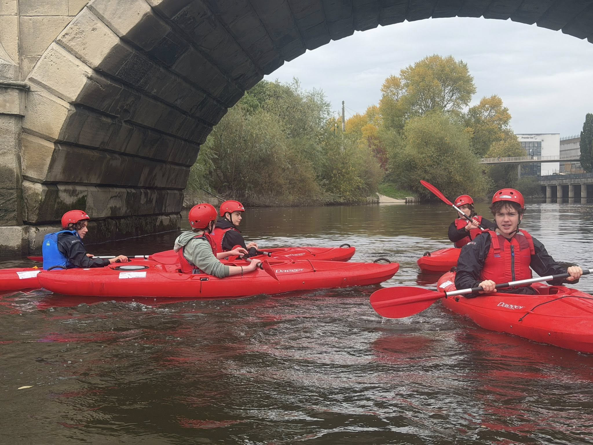

Looking for Things to Do in Ludlow?
If you're 14–18 and bored of the same old routine, we get it. Triffid Explorer Scouts is where you'll find actual adventure — not just sitting around.

If you're 14–18 and bored of the same old routine, we get it. Triffid Explorer Scouts is where you'll find actual adventure — not just sitting around.
Here's the thing — you pick what we do each term. We ask what you want, and we make it happen. Some terms it's all about the outdoors. Some terms there are cooking challenges and crafts. It's your programme.

We go kayaking on the river with a qualified instructor. Red boats, helmets, the lot. You'll get wet. That's the point.

Real camping. Tents, cooking your own food over a fire, sleeping under the stars (or clouds — it's Shropshire).

Actual rock faces, not a climbing wall in a leisure centre. Helmets on, chalk up, and send it.

Go-karting, paintballing, cycling, sailing — we fit in as many bigger activities as we can, often teaming up with other groups in the district for even more fun.

First aid, navigation, cooking challenges, crafts — stuff that's actually useful. We recently smashed our Stage 4 Emergency Aid training (the recognised Scout Association first-aid qualification).
Outdoor games in the woods after dark, night hikes with head torches, and sleepovers at the hut with gaming on the projector. The evening sessions hit different.
Summer camp every year (we've done beach trips with sea kayaking and surfing). Plus the Monopoly Run in London — thousands of Explorers racing around the city for a day. It's chaos. It's brilliant.
Honestly? Because it's fun. But also:
If you think Scouts is just for little kids, think again.
Explorer Scouts is for 14–18 year olds (you can join from 13½). It's not Cubs, it's not sitting in a circle singing songs. It's kayaking, rock climbing, camping in actual wilderness, earning your DofE, and building skills that genuinely matter. Most people come for six or seven sessions before they're completely hooked.
You don't need to have been in Scouts before. Loads of people join Explorers having never set foot in a Scout hut. You'll pick it up fast.
Already in Scouts and weighing it up? Here's a page that's just for you →
Neither did half the people who are here now. It takes about one session to feel like part of the group. Everyone's in the same boat (sometimes literally — we go kayaking).
Just yourself. Normal clothes are fine — if we're outdoors that night, the programme will say so — dress for it. We meet Mondays 7–9pm at Ludlow Scout Hut on Station Drive. Members travel in from across South Shropshire and the borders — Ludlow, Bucknell, Craven Arms, Cleobury Mortimer, Knighton, Bishop's Castle, Clun, Leintwardine, Wigmore, and North Herefordshire. For trips and camps, we'll give you a kit list.
Turn up on a Monday at 7pm. That's it. You can try a few sessions before you decide. If you want to give us a heads up first, drop an email — but you don't have to.